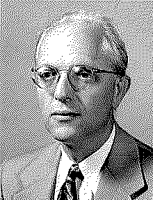

| годы | 1911–2007 |
| кто | математик и психолог; один из основателей системного подхода и математической теории конфликтов |
| турнир | прислал на турнир Аксельрода стратегию tit-for-tat (око за око) — победителя обоих турниров |
| вклад | теория игр · разоружение · разрешение конфликтов · пацифистские работы |
| связано | эволюция кооперации · око за око · Аксельрод |
пять строчек, что выиграли турнир.
Рапопорт прислал на турнир Аксельрода самую короткую программу — и она победила дважды.
Когда Роберт Аксельрод в 1980-м объявил турнир по повторяющейся дилемме заключённого, Рапопорт ответил программой из пяти строк: первый ход — кооперация, дальше — повтор за соперником. Tit-for-tat. Око за око.
Стратегия выиграла оба турнира — не потому что роняла соперников в поединках, а потому что на длинной дистанции собирала больше всех очков, разгоняя взаимную кооперацию с мирными игроками и быстро обрезая агрессоров.
Рапопорт был не только теоретиком игр. Математик, психолог, пацифист — он писал о разоружении и о том, как конфликты можно разрешать без эскалации. Его око за око стало символом: на дистанции выгодно быть добрым, отвечающим и отходчивым.